✓The symptoms, signs, causes and treatment of conjunctival disease.
✓The symptoms, signs, causes and treatment of corneal disease.
✓The difference between episcleritis and scleritis.
Introduction
Disorders of the conjunctiva and cornea are a common cause of symptoms. The ocular surface is regularly exposed to the external environment and subject to trauma, infection and allergic reactions – which account for the majority of diseases in these tissues. Degenerative and structural abnormalities account for a minority of problems.
Symptoms
Patients may complain of the following:
Pain and irritation. Conjunctivitis alone is seldom associated with anything more than mild discomfort. Pain signifies something more serious such as corneal injury or infection. This symptom helps differentiate conjunctivitis from corneal disease.
Redness. In conjunctivitis the entire conjunctival surface including that covering the tarsal plates is involved. If the redness is localized to the limbus (a ciliary flush) the following should be considered:
keratitis (an inflammation of the cornea);
uveitis (see Chapter 9);
acute glaucoma (see Chapter10).
Discharge. Purulent discharge suggests a bacterial conjunctivitis. Viral conjunctivitis is associated mainly with a more watery discharge.
Visual loss which is not cleared by blinking. This occurs only when the central cornea is affected. Loss of vision is thus an important symptom requiring urgent action.
Patients with corneal disease may also complain of photophobia.
Signs
The following features may be seen in conjunctival disease:
Papillae. These are raised lesions on the upper tarsal conjunctiva, about 1 mm or more in diameter with a central vascular core. They are a non-specific sign of chronic inflammation. They result from inflammatory infiltrates within the conjunctiva, constrained by the presence of multiple, tiny fibrous septa. Giant papillae are typical of allergic eye disease and are formed by the coalescence of papillae (see Figure 7.4). They are also seen as a reaction to contact lens wear.
Follicles (Figure 7.1). These are raised, gelatinous, oval lesions about 1 mm in diameter, found usually in the lower tarsal conjunctiva and upper tarsal border, and occasionally at the limbus. Each follicle represents a lymphoid collection with its own germinal centre. Unlike papillae, the causes of follicles are more specific (e.g. viral and chlamydial infections) and they are therefore a clue to aetiology.
Dilation of the conjunctival vasculature (termed injection).
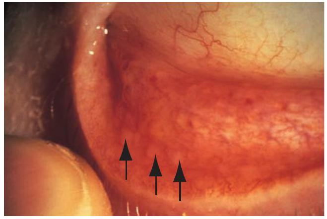
Figure 7.1 The clinical appearance of follicles.
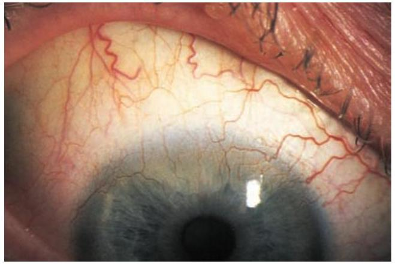
Figure 7.2 Pannus.
Subconjunctival haemorrhage, often bright red in colour because it is fully oxygenated by the ambient air, through the conjunctiva.
The features of corneal disease are different, and include the following:
Epithelial and stromal oedema, causing clouding of the cornea.
Cellular infiltrate in the stroma causing focal, granular white spots.
Deposits of cells on the corneal endothelium (termed keratic precipitates or KPs, neutrophils with fine KPs and lymphocytes or macrophages with coarse (‘mutton fat’) KPs; see Chapter 9).
Chronic keratitis may stimulate new blood vessels superficially, under the epithelium (pannus; Figure 7.2) or deeper in the stroma. Stromal oedema, which causes swelling and separates the collagen lamellae, facilitates vessel invasion.
Punctate epithelial erosions (PEE) are points of superficial epithelial cell loss or dysfunction which may be isolated or scattered, or confluent. On the cornea they are best detected using fluorescein dye, viewed with a blue light. Similar PEE occur on the conjunctiva and are best stained by lissamine green. More extensive epithelial loss, due to chemical or physical trauma, is referred to as an abrasion.
Conjunctiva
Inflammatory diseases of the conjunctiva
Bacterial conjunctivitis
Patients present with:
redness of the eye;
discharge;
ocular irritation.
The commonest causative organisms are Staphylococcus, Streptococcus, Pneumococcus and Haemophilus. The condition is usually self-limiting, although a broad-spectrum antibiotic eye drop will hasten resolution. Conjunctival swabs for culture are indicated in severe disease or if the condition fails to resolve.
Ophthalmia neonatorum
Ophthalmia neonatorum, refers to any conjunctivitis that occurs in the first 28 days of neonatal life and is a notifiable disease requiring urgent treatment. Swabs for culture are mandatory. It is also important that the cornea is examined to exclude any ulceration.
The commonest causative agents are:
Bacterial conjunctivitis (usually Gram-positive).
Neisseria gonorrhoeae. In severe cases this can cause corneal perforation. Systemic complications include rhinitis, stomatitis, arthritis, meningitis and septicaemia. Due to increasing resistance to penicillin a systemic, thirdgeneration cephalosporin (ceftriaxone) is used to treat the condition. The eye must be kept clean. Topical bacitracin ointment can also be given but systemic treatment is the most important. Refer parents to a sexually transmitted diseases clinic.
Herpes simplex, which can cause corneal scarring. Topical antivirals are used to treat the condition.
Chlamydia. This may be responsible for a chronic conjunctivitis and cause sight-threatening corneal scarring. Topical tetracycline ointment and systemic erythromycin are used to treat the local and systemic disease respectively. Refer parents to a sexually transmitted diseases clinic.
Viral conjunctivitis
This is distinguished from bacterial conjunctivitis by:
a watery and limited purulent discharge;
the presence of conjunctival follicles (hence follicular conjunctivitis). Preauricular lymph nodes are also enlarged;
there may also be lid oedema and excessive lacrimation.
The commonest causative agent is adenovirus, and to a much lesser extent Coxsackie and picornavirus. Adenovirus conjunctivitis is self-limiting but highly contagious and frequently occurs in epidemics. There is a risk of hospitalacquired infection, which can arise where there is failure to hand wash and disinfect equipment when managing a patient with a red eye and conjunctivitis. Certain adenovirus serotypes also cause a troublesome punctate keratoconjunctivitis, in which vision is affected, and which may have visual sequelae. Adenoviruses can also cause a conjunctivitis associated with the formation of a pseudomembrane across the conjunctiva. Patients must be given hygiene instruction to minimize the spread of infection in the home (e.g. frequent hand washing; using separate towels). Treatment of keratoconjunctivitis is controversial. No effective commercial antiviral is available. Antibacterial therapy is not indicated unless there is a secondary bacterial infection The use of topical steroids damps down symptoms and causes corneal opacities to resolve, but rebound inflammation is common when the steroid is stopped, and the corneal opacities reappear.
Chlamydial infections
Different serotypes of the obligate intracellular organism Chlamydia trachomatis are responsible for two forms of ocular infections.
Inclusion keratoconjunctivitis
This is a sexually transmitted disease and may take a chronic course (up to 18 months) unless adequately treated. Patients present with a mucopurulent follicular conjunctivitis and develop a micropannus (superficial peripheral corneal vascularization and scarring) associated with subepithelial scarring. Urethritis or cervicitis is common. Diagnosis is confirmed by detection of chlamydial antigens, using immunofluorescence, or by identification of typical inclusion bodies by Giemsa staining in conjunctival swab or scrape specimens.
Inclusion conjunctivitis is treated with topical and systemic tetracycline. The patient should be referred to a sexually transmitted diseases clinic.
Trachoma
This is the commonest infective cause of blindness in the world, although it is uncommon in developed countries (more details will be found in Chapter 17). The housefly acts as a vector, and the disease is encouraged by poor hygiene and overcrowding in a dry, hot climate. The hallmark of the disease is subconjunctival fibrosis caused by frequent re-infections associated with the unhygienic conditions. Blindness may occur due to corneal scarring from recurrent keratitis and trichiasis (Figure 7.3).
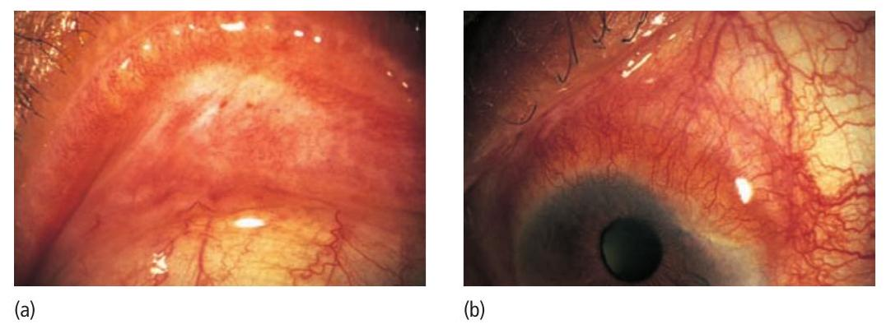
Figure 7.3 Trachoma: scarring of (a) the upper lid (everted) and (b) the cornea.
Trachoma is treated with oral or topical tetracycline or erythromycin. Azithromycin, an alternative, requires only a single oral dose. Entropion and trichiasis require surgical correction.
Allergic conjunctivitis
This may be divided into acute and chronic forms:
Acute (hayfever, or seasonal allergic conjunctivitis) is an acute IgE-mediated reaction to airborne allergens (usually pollens, e.g. ragweed, and mite allergens). Symptoms and signs include:
itchiness;
conjunctival injection and swelling (chemosis);
lacrimation.
Vernal conjunctivitis (spring catarrh) is also mediated by IgE. It often affects male children with a history of atopy. It is usually seasonal but may be present all year long and may become a chronic and intractable disease. Symptoms and signs include:
itchiness;
photophobia;
lacrimation;
papillary conjunctivitis on the upper tarsal plate (papillae may coalesce to form giant cobblestones; Figure 7.4);
limbal follicles and white spots;
punctate lesions on the corneal epithelium;
an opaque, oval plaque which in severe disease replaces an upper zone of the corneal epithelium.
Initial therapy is with mast cell stabilizers (e.g. sodium cromoglycate, nedocromil, lodoxamide) or antihistamines (e.g. levocabastine), or with agents combining mast cell stabilizing and antihistamine properties (e.g. olopatidine).
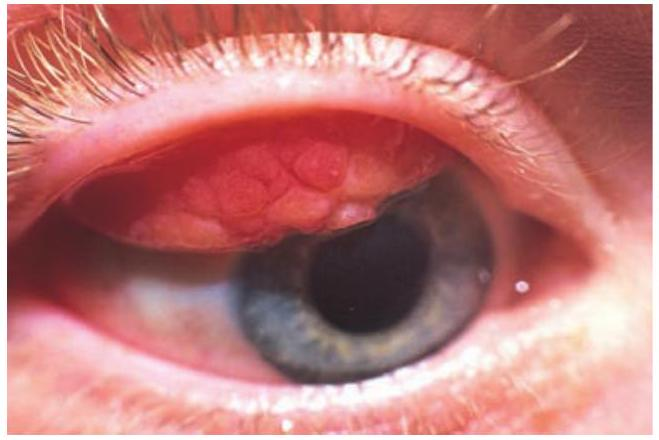
Figure 7.4 The appearance of giant (cobblestone) papillae in vernal conjunctivitis.
Topical steroids are required in severe cases but long-term use is avoided if possible because of the risks of steroid-induced glaucoma or cataract. Mucolytics (acetlycysteine) may be required to help dissolve the corneal plaque but surgery may be required.
Contact lens wearers may develop an allergic reaction to their lenses or to lens cleaning materials, leading to a giant papillary conjunctivitis (GPC) with a mucoid discharge. Whilst this may respond to topical treatment with mast cell stabilizers, it is often necessary to stop lens wear for a period, or even permanently if symptoms recur.
Conjunctival degenerations
Cysts are common in the conjunctiva. They rarely cause symptoms, but if necessary can be removed. Pingueculae and pterygia are found on the interpalpebral bulbar conjunctiva (Figure 7.5). They are thought to result from excessive exposure to the reflected or direct ultraviolet component of sunlight. Histologically the collagen structure is altered. Pingueculae are small, elevated yellowish paralimbal lesions that never impinge on the cornea. Pterygia are wing-shaped and located nasally, with the apex towards the cornea, onto which they progressively extend. They may cause irritation and, if extensive, may encroach onto the visual axis. They can be excised but may recur.
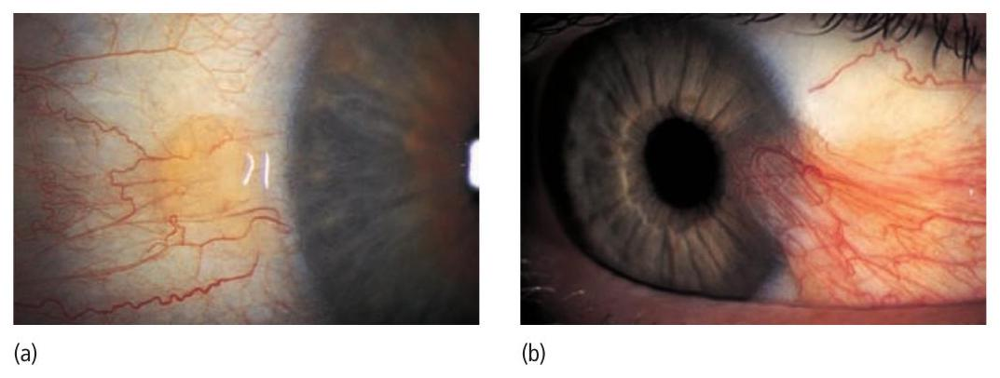
Figure 7.5 The clinical appearance of (a) a pinguecula; (b) a pterygium.
Conjunctival tumours
These are rare. They include:
Squamous cell carcinoma. An irregular raised area of conjunctiva which may invade the deeper tissues.
Malignant melanoma. The differential diagnosis from benign pigmented lesions (for example a naevus or melanosis) may be difficult. Review is necessary to assess whether the lesion is increasing in size. Biopsy, to achieve a definitive diagnosis, may be required.
Cornea
Infective corneal lesions
Herpes simplex keratitis
Type 1 herpes simplex (HSV) is a common and important cause of ocular disease. Type 2, which causes genital disease, may occasionally cause keratitis and infantile chorioretinitis. Primary infection by HSV1 is usually acquired early in life by close contact such as kissing. It may be asymptomatic, but otherwise is accompanied by:
fever;
vesicular lid lesions;
follicular conjunctivitis;
pre-auricular lymphadenopathy.
Primary infection may cause a conjunctivitis, with or without punctate keratitis. It is followed by resolution and latency of the virus in the trigeminal ganglion. ‘Recurrent’ infection involves reactivation of the latent virus, which travels centrifugally to nerve terminals in the corneal epithelium to cause an epithelial keratitis. There may be no past clinical history. The risk of reactivation is increased if the patient is debilitated (e.g. systemic illness, immunosuppression). The pathognomonic appearance is of a dendritic ulcer (Figure 7.6). These epithelial ulcers may heal without a scar but they may progress to a stromal keratitis, associated with an inflammatory infiltration and oedema, and ultimately a loss of corneal transparency and permanent scarring. This stage of the disease represents an immunogenic response to the viral antigen. If corneal scarring is severe, a corneal graft may be required to restore vision. Uveitis and glaucoma may accompany the disease. Disciform keratitis is another immunogenic reaction to herpes antigen in the stroma and presents as disc- or ring-shaped stromal oedema and clouding without ulceration, often associated with iritis.
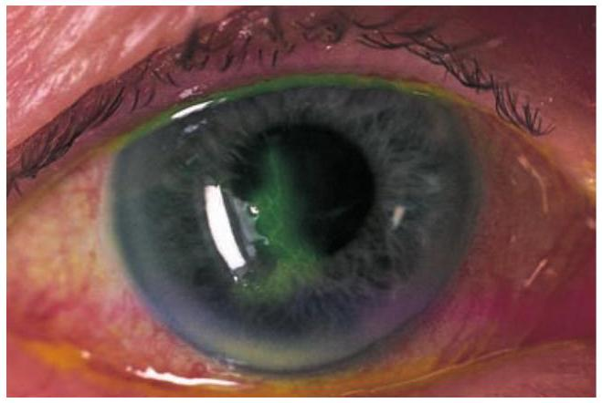
Figure 7.6 A dendritic ulcer seen in herpes simplex infection.
Dendritic lesions are treated with topical antivirals and typically heal within 2 weeks. In the UK the standard treatment is with aciclovir. Topical steroids must not be given to patients with a dendritic ulcer, since they may exacerbate the disease and cause extensive corneal ulceration. In patients with stromal involvement (keratitis), steroids are used under ophthalmic supervision and with antiviral cover, to suppress the immunogenic response. Patients undergoing corneal graft surgery for past HSV keratitis commonly receive an extended course of prophylactic, oral antiviral cover to inhibit recurrence.
Herpes zoster ophthalmicus (ophthalmic shingles)
This is caused by the varicella zoster virus which is responsible for chickenpox (Figure 7.7). The ophthalmic division of the trigeminal nerve is affected. Unlike herpes simplex infection, there is usually a prodromal period with the patient systemically unwell. Ocular manifestations are usually preceded by pain and the appearance of vesicles in the distribution of the ophthalmic division of the trigeminal nerve. Ocular problems are more likely if the nasociliary branch of the nerve is involved (signalled by vesicles at the root of the nose). Signs include:
lid swelling (which may be bilateral);
keratitis;
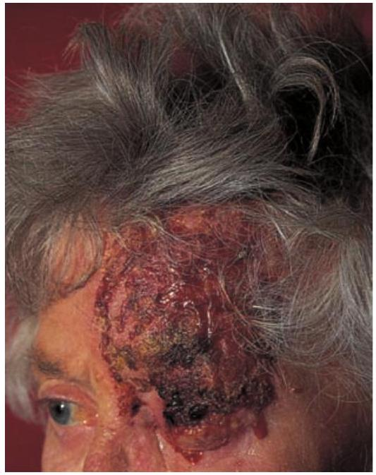
Figure 7.7 The clinical appearance of herpes zoster ophthalmicus.
iritis;
secondary glaucoma.
Reactivation of the disease is often linked to unrelated systemic illness. Oral antiviral treatment (e.g. aciclovir, famciclovir) is effective in reducing postinfective neuralgia (a severe chronic pain in the area of the rash) if given within 3 days of the skin vesicles erupting. Ocular disease may require treatment with topical steroids and antibacterials to cover secondary infection.
The prognosis of herpetic eye disease has improved since antiviral treatment became available. Both simplex and zoster cause anaesthesia of the cornea. Non-healing indolent ulcers may be seen following simplex infection, and these are difficult to treat.
Bacterial keratitis
Pathogenesis
A host of bacteria may infect the cornea. Some are found on the lid margin as part of the normal flora. The conjunctiva and cornea are protected against infection by:
blinking;
washing away of debris by the flow of tears;
entrapment of foreign particles by mucus;
the antibacterial properties of the tears;
the barrier function of the corneal epithelium (Neisseria gonorrhoeae is the only organism that can penetrate the intact epithelium).
Predisposing causes of bacterial keratitis include:
keratoconjunctivitis sicca (dry eye);
a breach in the corneal epithelium (e.g. following surgery or trauma);
contact lens wear;
prolonged use of topical steroids.
Symptoms and signs
These include:
pain, usually severe unless the cornea is anaesthetic;
purulent discharge;
ciliary injection;
visual loss (severe if the visual axis is involved);
hypopyon – sometimes (a mass of white cells collected in the anterior chamber; see Chapter 9);
a white corneal opacity which can often be seen with the naked eye (Figure 7.8).
Treatment
Scrapes are taken from the base of the ulcer for Gram staining and culture. The patient is then treated with intensive topical antibiotics, often with dual therapy using specially formulated, concentrated, combined preparations to cover most organisms (e.g. cefuroxime against Gram-positive bacteria and gentamicin for Gram-negative bacteria). The use of fluoroquinolones (e.g. ciprofloxacin, ofloxacin, available commercially) as a monotherapy is gaining popularity. The drops are given hourly, day and night, for the first couple of days and are reduced in frequency as clinical improvement occurs. In severe or unresponsive disease the cornea may perforate. This can be treated initially with tissue adhesives (cyanoacrylate glue) and a subsequent corneal graft. A persistent scar may also require a corneal graft to restore vision.
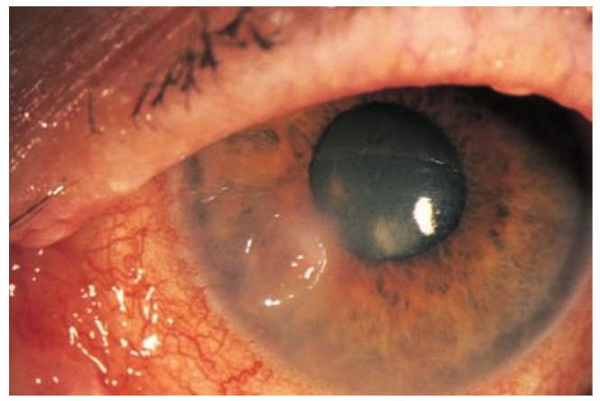
Figure 7.8 Clinical appearance of a bacterial corneal ulcer.
Acanthamoeba keratitis
This freshwater amoeba is responsible for infective keratitis (Figure 7.9). The infection has become more common with the increasing use of soft contact lenses. A painful keratitis with prominent, infiltrated corneal nerves results. The amoeba can be isolated from the cornea (and from the contact lens case) with a scrape and cultured on special plates impregnated with Escherichia coli. Topical chlorhexidine, polyhexamethylene biguanide (PHMB) and propamidine are used to treat the condition.
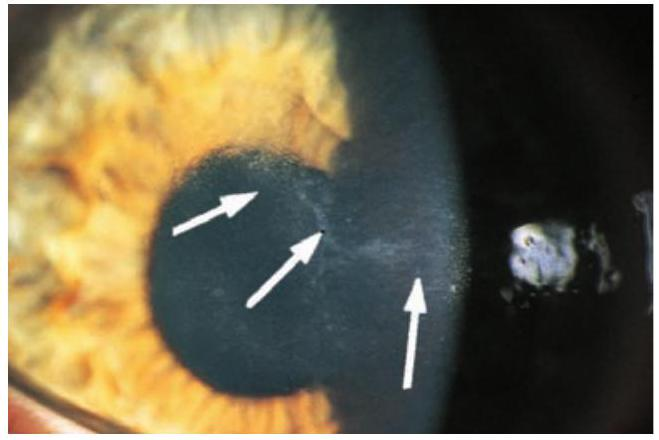
Figure 7.9 The clinical appearance of acanthamoeba keratitis. Arrows indicate neurokeratitis.
Fungal keratitis
This is unusual in the UK but more common in warmer climates such as the southern USA. In India it accounts for 30–50% of infective keratitis. It should be considered in:
lack of response to antibacterial therapy in corneal ulceration;
cases of trauma with vegetable matter;
cases associated with the prolonged use of steroids.
The corneal opacity appears fluffy, and satellite lesions may be present. Liquid and solid Sabouraud’s medium is used to grow the fungi. Incubation may need to be prolonged. Treatment requires topical antifungal drops such as pimaricin (natamycin) 5%.
Interstitial keratitis
This term is used for any vascular keratitis that affects the corneal stroma without epithelial involvement. Classically the most common cause was congenital syphilis, leaving a midstromal scar interlaced with the empty (‘ghost’) blood vessels. Corneal grafting may be required when the opacity is marked and visual acuity reduced.
Corneal dystrophies
These are rare inherited disorders. They affect different layers of the cornea and often affect corneal transparency (Figure 7.10). They may be divided into:
Anterior dystrophies involving the epithelium. These may present with recurrent corneal erosion.
Stromal dystrophies presenting with visual loss. If very anterior they may cause corneal erosion and pain.
Posterior dystrophies which affect the endothelium and cause gradual loss of vision due to corneal oedema. They may also cause pain due to epithelial erosion.
Disorders of shape
Keratoconus
This is usually a sporadic disorder but may occasionally be inherited. Thinning of the centre of the cornea leads to an ectatic, conical corneal shape, with marked myopia and an irregular astigmatism. Vision is affected but there is no pain. Initially the associated astigmatism can be corrected with glasses and then, as the disease progresses, with contact lenses. The contact lens arches over the irregularly shaped cornea to provide a new, optically perfect anterior surface which restores the optics of the eye. The condition is due to a failure of adhesion between the collagen fibrils of the stroma, responsible for its mechanical strength. Thinning is due to an unravelling process. Current treatment is directed to cross-linking of the stromal collagen, which is achieved by exposing the stroma to UVA radiation in the presence of riboflavin; the generation of free radicals results in cross-linking and inhibits progression of the disease. In severe cases a corneal graft may be required.
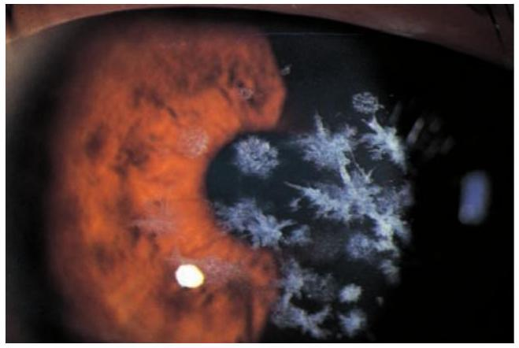
Figure 7.10 Example of a corneal dystrophy (granular dystrophy).
Central corneal degenerations
Band keratopathy
Band keratopathy is the subepithelial deposition of calcium phosphate in the exposed part of the cornea where CO2 loss and the consequent raised pH favour its deposition (Figure 7.11). It is seen in eyes with chronic uveitis or glaucoma, and may cause visual loss or discomfort if epithelial erosions form over the band. If symptomatic it can be scraped off surgically, aided by a chelating agent such as sodium edetate. The excimer laser can also be effective in treating these patients by ablating the affected surface. Band keratopathy can also be a sign of systemic hypercalcaemia, as in hyperparathyroidism or renal failure. The lesion is then more likely to occupy the 3 o’clock and 9 o’clock positions of the paralimbal cornea.
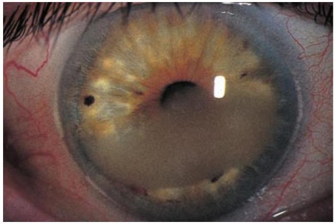
Figure 7.11 Band keratopathy.
Peripheral corneal degenerations
Corneal thinning
A rare cause of painful peripheral corneal thinning is Mooren’s ulcer, a condition of progressive corneal melting with an immune basis which starts near the limbus and spreads relentlessly across the cornea. Corneal melting can also be seen in collagen diseases such as rheumatoid arthritis and Wegener’s granulomatosis. Treatment can be difficult, and both sets of disorder require systemic and topical immunosuppression and antiproteases. Where there is an associated dry eye it is important to ensure adequate corneal wetting and corneal protection (see Chapter 6).
Lipid arcus
This is a peripheral white ring-shaped lipid deposit, separated from the limbus by a clear interval. It is often seen in normal, elderly people (arcus senilis), but in younger patients, under 50 years, it may be a sign of hyperlipoproteinaemia. It does not affect vision and no treatment is required.
Corneal grafting
Donor corneal tissue can be grafted into a host cornea to restore corneal clarity or repair a perforation (Figure 7.12). Donor corneas can be stored and are banked so that corneal grafts can be performed on routine operating lists. The avascular condition of the cornea, and additional processes in the cornea and anterior chamber, maintain the host cornea as an immune-privileged site. The cornea possess antiangiogenic mechanisms, and mediators in the anterior chamber suppress immune responsiveness. There is therefore a high success rate for corneal grafting. Tissue can be HLA-typed for grafting of vascularized corneas at high risk of immune rejection, although the value of this is still uncertain. The patient is treated with steroid eye drops for some time after the operation to prevent graft rejection. Complications such as astigmatism can be dealt with surgically or by suture adjustment. Increasingly, methods are being developed that permit only the damaged part of the cornea to be transplanted, for example the endothelial layer when disease of this layer results in corneal oedema.
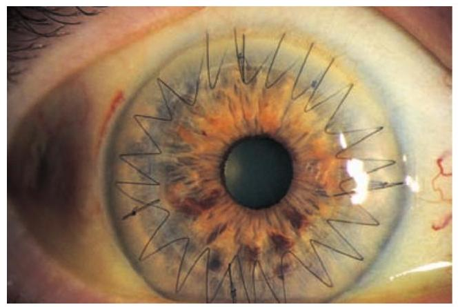
Figure 7.12 A corneal graft. Note the interrupted and the continuous sutures at the interface between graft and host.
Graft rejection
Any patient who has had a corneal graft and who complains of redness, pain or visual loss must be seen urgently by an eye specialist, as this may indicate graft rejection. Examination shows graft oedema, iritis and a line of activated T-cells attacking the graft endothelium. Intensive topical steroid application in the early stages can restore graft clarity.
Sclera
Episcleritis
This inflammation of the superficial layer of the sclera causes mild discomfort. It is rarely associated with systemic disease. It is usually self-limiting but, as symptoms are tiresome, topical anti-inflammatory treatment can be given. In rare, severe disease, systemic non-steroidal anti-inflammatory treatment may be helpful.
Scleritis
This is a more severe condition than episcleritis, and may be associated with the collagen vascular diseases, most commonly rheumatoid arthritis, but also polyarteritis nodosa and systemic lupus erythematosis. It is a cause of intense ocular pain. Both inflammatory areas and ischaemic areas of the sclera may occur. Characteristically the affected sclera is swollen (Figure 7.13). The following may complicate the condition:
scleral thinning (scleromalacia), sometimes with perforation;
keratitis;
uveitis;
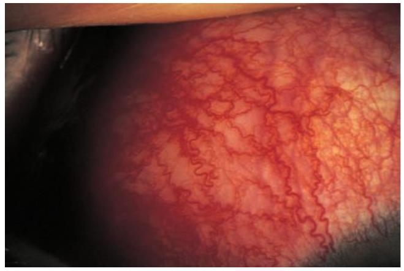
Figure 7.13 The appearance of scleritis.
cataract formation;
glaucoma.
Treatment may require high doses of systemic steroids, or in severe cases cytotoxic therapy and investigation to find any associated systemic disease.
Scleritis affecting the posterior part of the globe may cause choroidal effusions, or may simulate a tumour.
Multiple choice questions
An 11-year-old child presents with a red watery eye and slightly blurred vision. Her sister had similar symptoms a week ago. The appearance of the eye is shown in Figure 7.14.
The most likely diagnosis is uveitis.
The most likely diagnosis is viral conjunctivitis.
The most likely diagnosis is bacterial conjunctivitis.
The child should be treated with steroids.
Papillae are present as elevations on the lid mucosa.
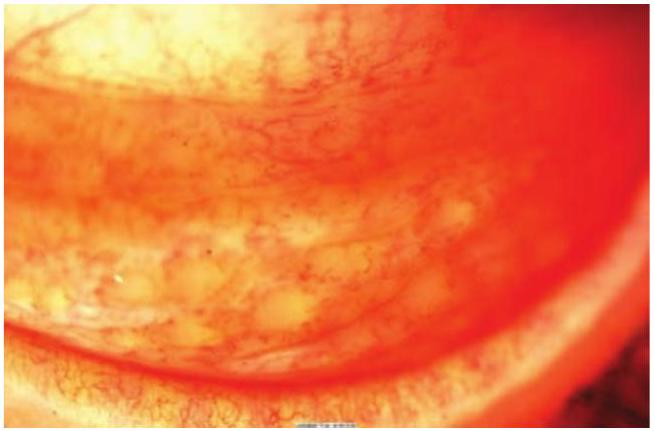
Figure 7.14 The clinical appearance of the eye referred to in Question 1.
A 26-year-old patient presents with an itchy watery eye. She is photophobic and the vision has become blurred. She has a history of asthma. The appearance of the eye is shown in Figure 7.15.
The most likely diagnosis is uveitis.
The most likely diagnosis is epithelial herpes simplex keratitis.
The most likely diagnosis is allergic conjunctivitis.
Treatment is with antihistamines, mast cell stabilizers and topical steroids.
Treatment is with aciclovir.
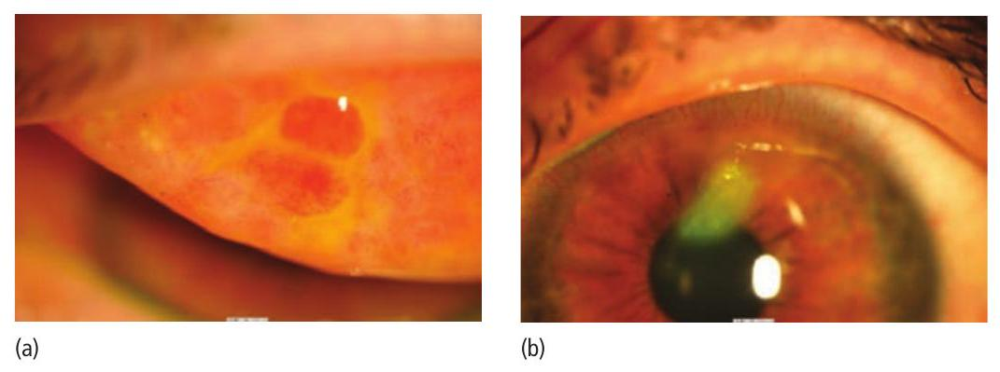
Figure 7.15 The clinical appearance of the eye referred to in Question 2.
A 67-year-old lady presents with pain on the right side of her forehead. She has been feeling generally unwell. She has just noticed the appearance of vesicles on the skin.
The most likely diagnosis is herpes simplex.
The most likely diagnosis is herpes zoster.
The most likely diagnosis is acanthamoeba keratitis.
Ocular complications may include keratitis, iritis and secondary glaucoma.
The patient should be prescribed systemic aciclovir in high dosage.
A contact lens wearer presents with a red painful eye. There is a purulent discharge and vision is decreased. Figure 7.16 shows the appearance of the eye.
The most likely diagnosis is a bacterial corneal ulcer.
Acanthamoeba keratitis is another possibility in a contact lens wearer.
The most likely diagnosis is a corneal dystrophy.
The patient has band keratopathy.
Treatment with intensive topical antibiotics is necessary.
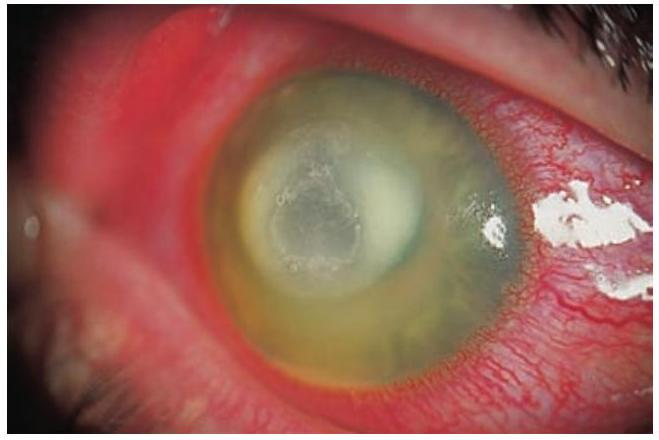
Figure 7.16 The clinical appearance of the eye referred to in Question 4.
A 24-year-old lady presents with a red eye. There is no discharge. The redness is located in the temporal quadrant of the bulbar conjuctiva. There is slight discomfort; the vision is normal. There is no other medical history.
The most likely diagnosis is bacterial conjunctivitis.
The most likely diagnosis is keratoconus.
The most likely diagnosis is episcleritis.
The most likely diagnosis is scleritis.
Treatment is with topical steroids or a non-steroidal anti-inflammatory agent.
Identify the conditions shown in Figure 7.17.
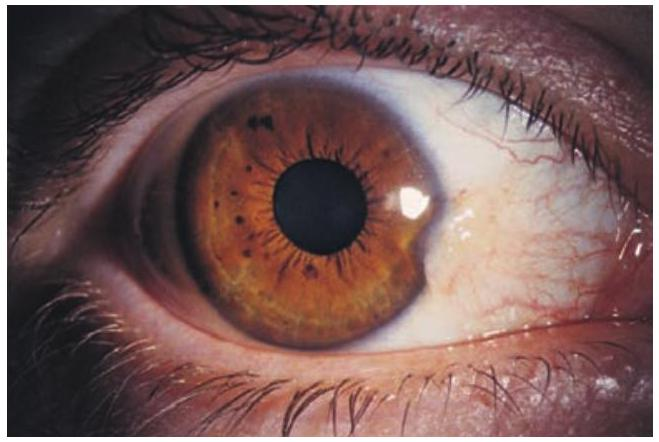
(a)
Figure 7.17 See Question 6.
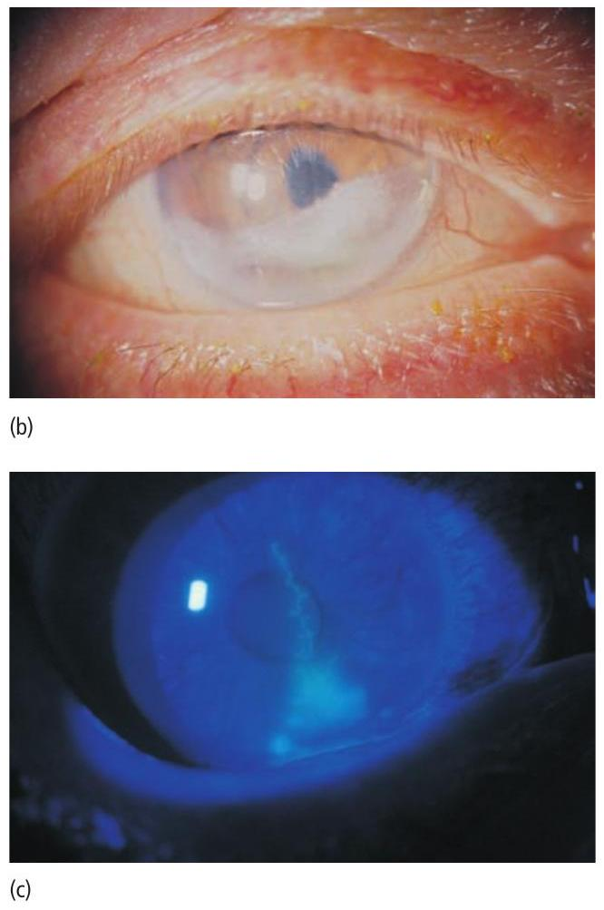
Figure 7.17 (Continued)
Answers
An 11-year-old child presents with a red watery eye and slightly blurred vision.
False. While the symptom of redness fits, the watering and similar symptoms experienced by her sister suggest that an infection is more likely.
True. The symptoms are typical of an adenovirus conjunctivitis, a condition which is highly contagious.
False. The discharge would be mucopurulent.
False. While steroids can help the corneal complications of adenovirus infection, they are difficult to wean. Also, you would wish to exclude a herpes simplex infection before considering their use.
False. These elevations are called ‘follicles’ and are composed of lymphoid cells.
A 26-year-old patient presents with an itchy watery eye.
False. The inflammation is not localized at the limbus, papillae are present, and there is an opaque corneal plaque on the cornea.
False. The corneal lesion does not resemble a dendritic ulcer.
True. The redness, papillae and corneal lesion are typical of severe vernal keratoconjunctivitis.
True. This is a serious condition that may affect the long-term clarity of the cornea. Mucolytic drops are also given to remove help dissolve the corneal plaque.
False. Aciclovir is an antiviral agent used in the treatment of herpes simplex keratitis.
A 67-year-old lady presents with pain on the right side of her forehead.
False. Vesicles would not be a feature of the disease in this age group.
True. This is a classical presentation.
False. The skin is not affected in acanthamoeba keratitis.
True. The effects on the eye can be widespread, see page 105.
True. If this is given in the first 3 days of the disease it can reduce symptoms and help prevent severe post-herpetic neuralgia.
A contact lens wearer presents with a red painful eye.
True. Contact lens wear is the commonest risk factor in the developed world. Other causes are trauma, prolonged steroid use, dry eye and an anaesthetic cornea (as seen in herpetic eye disease).
True. The eye is usually very painful.
False. These rarely cause a red painful eye.
False. Band keratopathy is caused by a deposition of calcium salts in the superficial cornea. It may sometimes cause a red painful eye, but the appearance differs.
True. This is an ophthalmic emergency.
A 24-year-old lady presents with a red eye.
False. There is no discharge and injection is not usually localized in conjunctivitis.
False. Keratoconus is a disorder of corneal shape and occurs in a white eye.
True. The symptoms and signs are very suggestive.
False. The diagnosis is possible but less likely than episcleritis. Scleritis causes a deep, boring pain.
True. Simple episcleritis is self-limiting. Nodular episcleritis may be helped by topical anti-inflammatory agents. If there is a lack of response, a systemic NSAID (e.g. flurbiprofen) may be used.
Identify the conditions shown in Figure 7.17.
Pterygium.
Band keratopathy.
Herpes simplex dendritic ulcer stained with fluorescein.